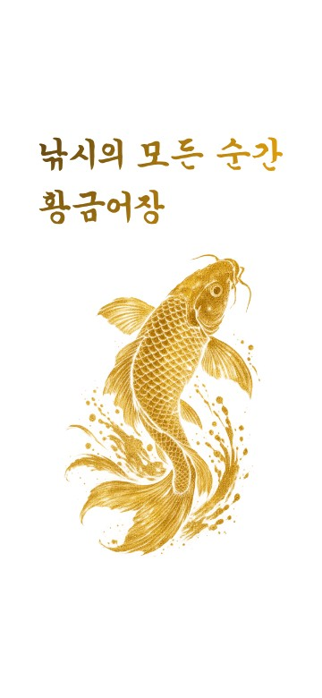
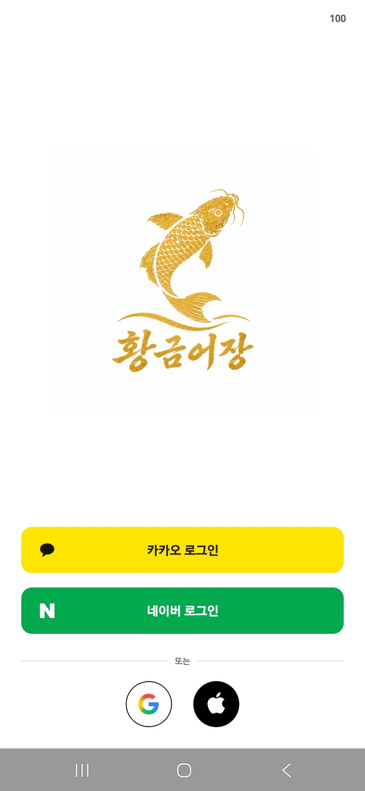
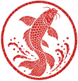
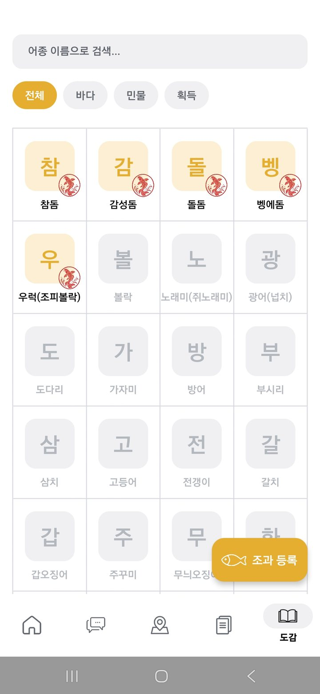
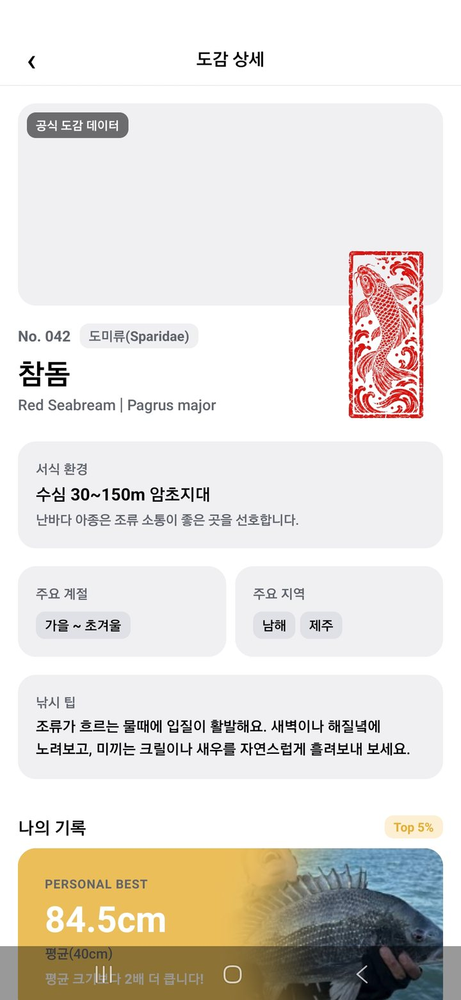
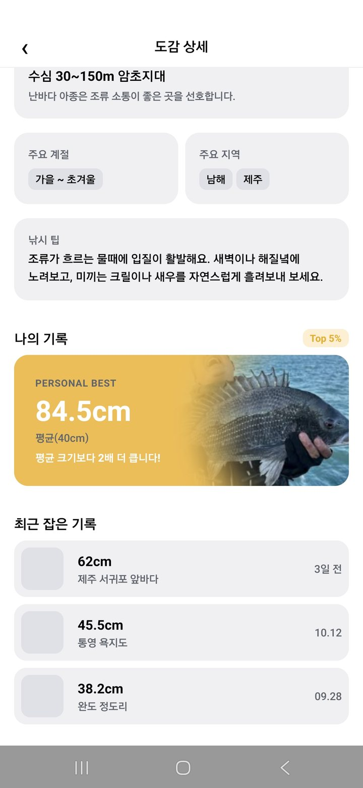

드디어 제주도에서 무늬오징어를 잡았습니다. 에기 색상은 케이무라를 사용했고, 액션은 짧게 두 번…
초보조사👁 42♥ 12💬 5



드디어 제주도에서 무늬오징어를 잡았습니다. 에기 색상은 케이무라를 사용했고, 액션은 짧게 두 번…
큰맘 먹고 스텔라 하나 장만했어요
루어 낚시의 기본인 FG노트 매는 법을 영상 캡처와 함께 상세히 설명해 드립니다.
바람이 많이 불었지만 운 좋게…


